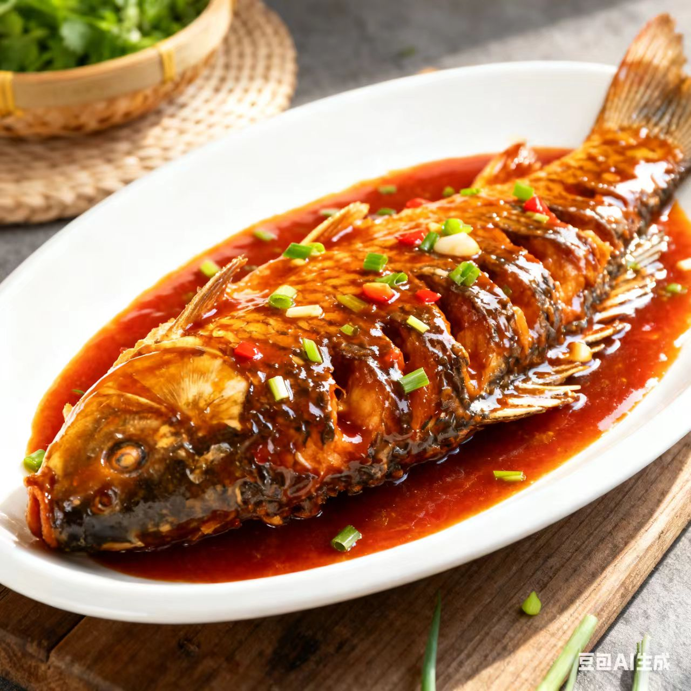
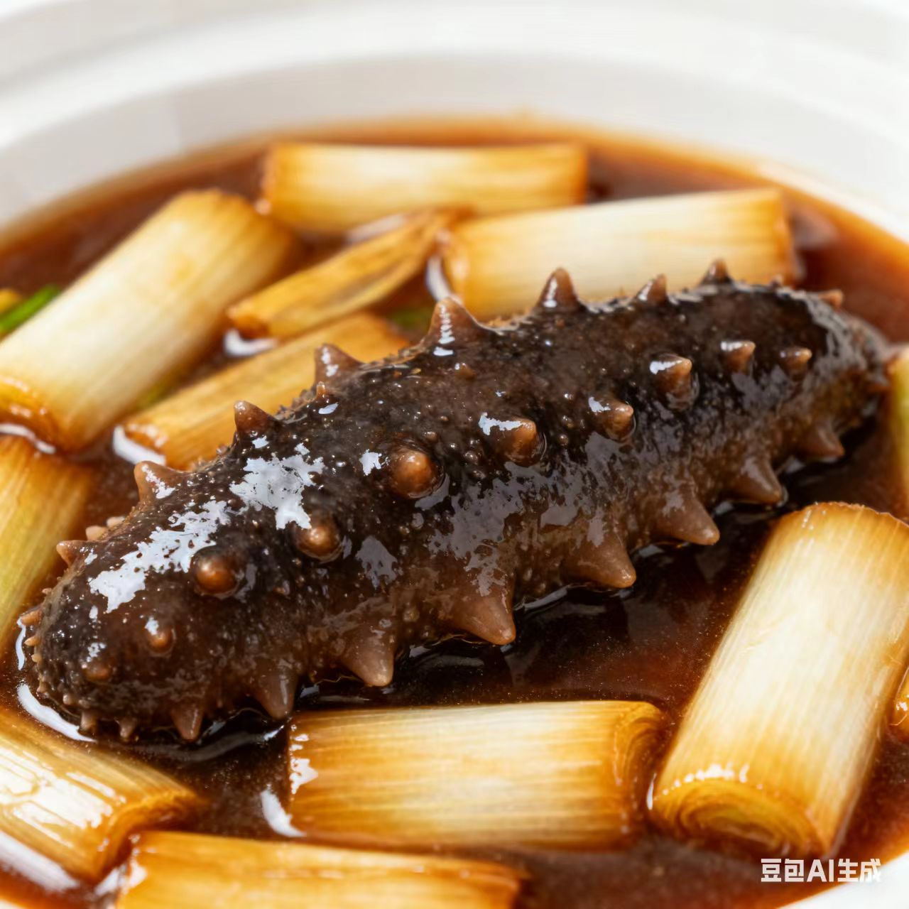
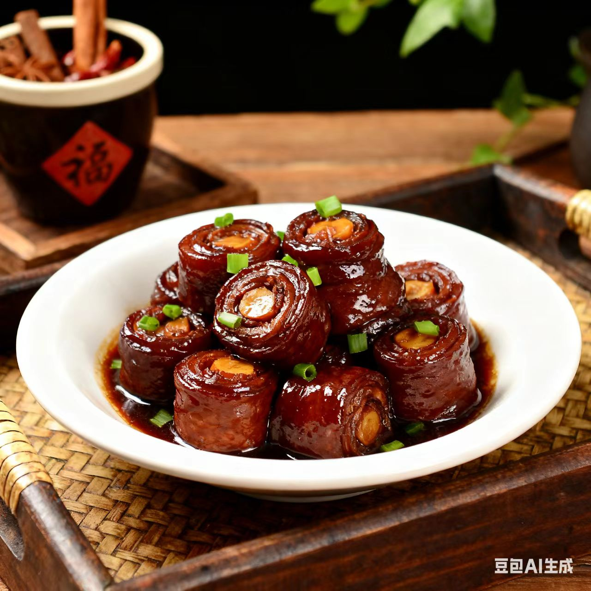

鲁菜 · Lu Cuisine
咸鲜醇厚里的北方烟火与宫廷余韵
一、起源与历史
鲁菜发源于山东（古齐鲁地区），是“四大菜系”中历史最久的菜系，商周时已具“食礼”雏形，明清成为宫廷菜核心根基，烹饪思想强调“咸鲜为本”，讲究“五味调和、火候精准”的大气风格
二、地理与气候影响
山东半岛海陆兼具（海鲜、禽畜、杂粮资源丰富），气候干燥寒冷让饮食偏向“醇厚浓郁”，同时齐鲁文化的“礼食传统”让鲁菜兼具“家常烟火”与“宴饮规格”
三、主要烹调技法
- 炒
- 爆
- 烧
- 扒
- 熘
每种技法都重“火候与调味”，如爆菜脆嫩爽口，扒菜整齐入味，烤菜外焦里嫩
四、代表菜肴
-
糖醋鲤鱼

-
葱烧海参

-
九转大肠

五、风味与审美
鲁菜的独特在于“以咸为基、以鲜为魂、以浓为韵”，追求厚而不重、醇而不浊的平衡，味觉逻辑体现了山东人“豪爽而精细”的生活态度
六、文化意象
鲁菜不仅是饮食，更是齐鲁“礼义文化”的载体——从孔府宴的“食不厌精”到街头的“煎饼卷大葱”，鲁菜承载了“庙堂与江湖的味觉共鸣”
七、地方俗语
要想吃好饭，围着山东转
鲁菜三分味，七分在火候
拓展视野：视频
拓展视野：学术资料
| 研究论文 / 报告名称 | 链接 |
|---|---|
| 《鲁菜饮食文化的历史演变》 | 查看论文 |